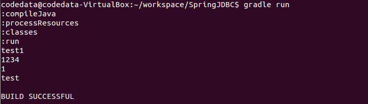

Java Tutorial 第三堂（1）IDE 與 Gradle << 前情
在商務應用的領域，Java 物件通常表示了商業物件，例如帳戶、表單等，如果商業物件能長久保存，即使 JVM 重新啟動，也能在重新載入時恢復狀態，則稱這種長期保存物件狀態的機制稱為永續化（Persistence）機制。當然，你可以使用 Java 的 I/O 相關 API 來進行物件狀態的保留，甚至使用 Java 物件序列化 機制來直接儲存物件，然而，企業最常使用的永續性機制就是關聯式資料庫系統。
關於 JDBC
Java 早從 1.1 版起，就推出存取資料庫系統的 JDBC（Java Database Connectivity）規格，它分為兩個部份：JDBC 應用程式開發者介面（Application Developer Interface）以及 JDBC 驅動程式開發者介面（Driver Developer Interface）。簡而言之，JDBC 將操作資料庫的客戶端 API 與廠商實作分離，Java 開發者只要取得 JDBC 驅動程式，透過標準 API 操作，就可連結各個廠牌資料庫存取資料，不需要因為換資料庫就重新學習新的 API。一個直接使用 JDBC API 連線資料庫的片段可能會像是這樣：
String url = "jdbc:mysql://localhost:3306/dvd_library";
String user = "root";
String password = "123456";
Connection conn = null;
SQLException ex = null;
try {
conn = DriverManager.getConnection(url, user, password);
....
}
catch(SQLException e) {
ex = e;
}
finally {
if(conn != null) {
try {
conn.close();
}
catch(SQLException e) {
if(ex == null) {
ex = e;
}
else {
ex.addSuppressed(e);
}
}
}
if(ex != null) {
throw new RuntimeException(ex);
}
}這實在是蠻嚇人的！如果要想確實瞭解 Java 如何存取資料庫，學習 JDBC 確實是必要的，然而實際上 JDBC 撰寫來冗長且痛苦，就六個小時的課程來說，也沒有閒功夫來做這樣的練習，無論如何，現在有許多程式庫或框架封裝了 JDBC 並提供高階的各種抽象，讓你使用 Java 存取資料庫時，可以有更多簡單而實用的選擇。
使用 spring-jdbc
Spring Framework 由 Rod Johnson 在 2002年出版的 J2EE Design and Development 第 13 章中首次公開發表，自 2003 年 1 月起以開放原始碼專案的型式持續發展與改進，Spring 核心包為輕量級元件容器（Lightweight Container），並提供各種 API 封裝及框架整合，學習或使用 Java 的開發者，在 Java 這條路上不免會碰到 Spring，可見 Spring 在 Java 界的重要性。就目前來說，如果想使用 Spring 的任何元件，必須透過 Maven 或 Gradle 來取得相依程式庫。Spring 中提供對 JDBC 的封裝，如果使用 Gradle，可以在 build.gradle 建構檔案中如下定義：
apply plugin: 'java'
apply plugin:'application'
mainClassName = 'tw.codedata.Main'
repositories {
mavenCentral()
}
dependencies {
compile 'org.springframework:spring-jdbc:4.0.0.RELEASE'
compile 'org.hsqldb:hsqldb:2.3.1'
}在這邊也一併加入了 HSQLDB 的相依性宣告，這是個純 Java 撰寫的資料庫，在這邊使用它，可以不用大費周章地設置資料庫系統，你可以很簡單地透過 HSQLDB 的
DBCDataSource 來設置資料庫，以及連線時必要的相關訊息：
JDBCDataSource dataSource = new JDBCDataSource();
dataSource.setUrl("jdbc:hsqldb:file:src/main/resources/db/dvd_library");
dataSource.setUser("codedata");
dataSource.setPassword("123456");
DBCDataSourcejavax.sql.DataSource，顧名思義，DataSource 是個資料來源，可用來取得資料庫連線 java.sql.Connection 的實作物件，如果資料庫檔案不存在，在 setUrl 時就會建立新的檔案。在 Spring 的 JDBC 的封裝中，最常使用的是 JdbcTemplate，其封裝了 JDBC 使用過程中可共用的樣版流程，建構 JdbcTemplate 時，需要的正是一個 DataSource 實作物件：
JdbcTemplate jdbcTemplate = new JdbcTemplate(dataSource);
JdbcTemplateexecute 方法在 HSQLDB 中建立表格：
jdbcTemplate.execute("DROP TABLE dvds if exists");
jdbcTemplate.execute("DROP TABLE directors if exists");
jdbcTemplate.execute(
"CREATE TABLE directors ("
+ "id INTEGER GENERATED BY DEFAULT AS IDENTITY(START WITH 1),"
+ "name VARCHAR(255),"
+ "PRIMARY KEY(id))"
);
jdbcTemplate.execute(
"CREATE TABLE dvds ("
+ "id INTEGER GENERATED BY DEFAULT AS IDENTITY(START WITH 1),"
+ "title VARCHAR(255),"
+ "year INTEGER NOT NULL,"
+ "duration INTEGER NOT NULL, "
+ "director_id INTEGER NOT NULL, "
+ "FOREIGN KEY (director_id) REFERENCES directors(id))"
);如果想要在資料表格中新增資料，可以使用
JdbcTemplate 的 update 方法。例如：
jdbcTemplate.update(
"INSERT INTO directors(name) values(?)", "codedata");
如果查詢回來的資料對應於 JVM 中的某個物件，可以使用
queryForObject 方法。例如：
jdbcTemplate.queryForObject(
"SELECT COUNT(*) FROM directors WHERE name=?",
new Object[] {"codedata"}, Integer.class)如果查詢結果不只一筆，可使用
queryForList 方法，這會傳回一個 List，當中每個元素都是 Map：
List<Map<String, Object>> results =
(List<Map<String, Object>>) jdbcTemplate.queryForList(
"SELECT * FROM directors WHERE name=?", "codedata");
Mapfor(Map<String, Object> result : results) {
String title = (String) result.get("title");
Integer age = (Integer) result.get("age");
...
}如果想要
List 直接是封裝過後的資料物件，可以使用 RowMapper，進行簡單的物件封裝。例如：
List<Dvd> dvds = jdbcTemplate.query(
"SELECT dvds.title, dvds.year, dvds.duration, "
+ "directors.name FROM dvds, directors "
+ "WHERE dvds.director_id = directors.id"
+ " ORDER BY dvds.title",
new RowMapper<Dvd>() {
@Override
public Dvd mapRow(ResultSet rs, int rowNum) throws SQLException {
return new Dvd(
rs.getString("title"),
rs.getInt("year"),
rs.getInt("duration"),
rs.getString("name")
);
}
});這邊列出一些大致的用法，將來你若正式學習過 JDBC，可試著撰寫與這邊功能相似的 JDBC 程式碼，馬上就可以看出使用
JdbcTemplate 的好處；實際上，資料永續存取時，會搭配 DAO 模式，如果你需要撰寫 JDBC 實作的 DAO，可以試著繼承 Spring 的 JdbcDaoSupport，只要設定給它 DataSource 實例，就可以擁有取得 JdbcTemplate 等的現成方法。例如：
public class DvdDaoJdbcImpl extends JdbcDaoSupport implements DvdDao {
public DvdDaoJdbcImpl(DataSource dataSource) {
setDataSource(dataSource);
}
public DvdDaoJdbcImpl createTables() {
JdbcTemplate jdbcTemplate = getJdbcTemplate();
...
}
...
}練習 9：使用 spring-jdbc
在 Lab 檔案的 exercises/exercise9 中有個 SpringJDBC 專案，試著先查看一下其中
Main、Dvd、DvdDao、DvdDaoJdbcImpl 等類別的內容與關係。
開啟專案中的 DvdDaoJdbcImpl.java 時，你會發現其中有些程式碼不完整，試著參考以上列出的說明，將程式碼補齊，然後於專案中運行 gradle run，查看一下是否可存取、查詢與顯示表格資料。{kind=link}

如果有不清楚如何實作的部份，請試著查看 Lab 檔案的 solutions/exercise9 中的 SpringJDBC 專案，當中有實作完成的程式碼。